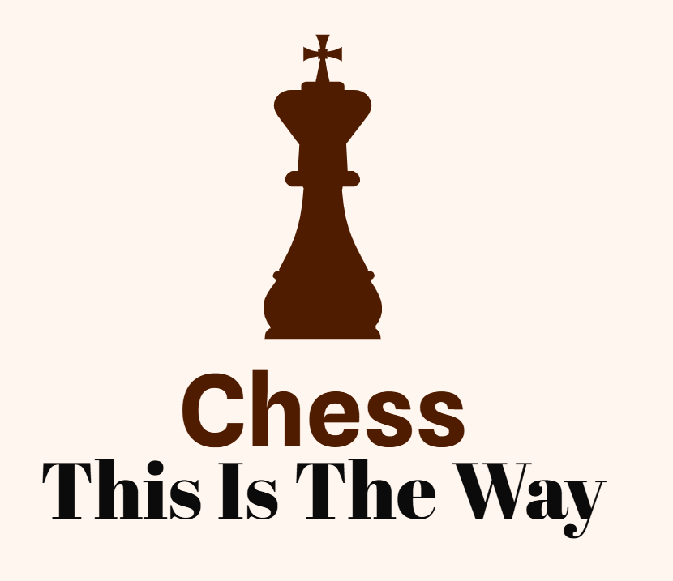

Most chess players do not understand basic mainline theory such as the Catalan opening! Playing these theory-heavy openings befuddles their simple brains!
It is almost certain the game will end in an endgame! That time, position is way more important than material! A King + Rook + Pawn can lose or at least draw to a King + Rook if the one playing the King + Rook has a superior position!
Especially important for blitz/rapid specialists! A strategy to take is 'camping', where you repeatedly move a simple piece to waste your opoonent's time! ESPECIALLY POWERFUL IN RAPID!
Please be a good person and resign when your opponent successfully initiates a discovered attack. No need to convulse in death struggles like a corpse with rigor mortis - no point in doing that at all, it just makes you seem like a horribly annoying person.
Return to Home Page 